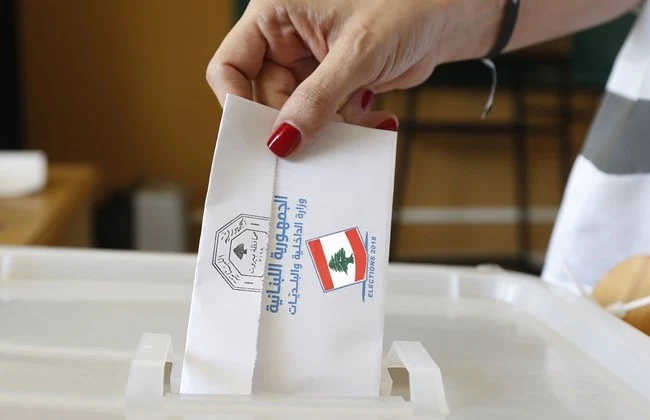
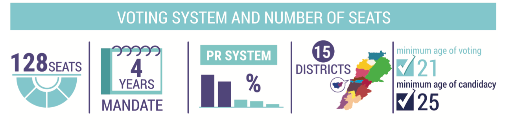
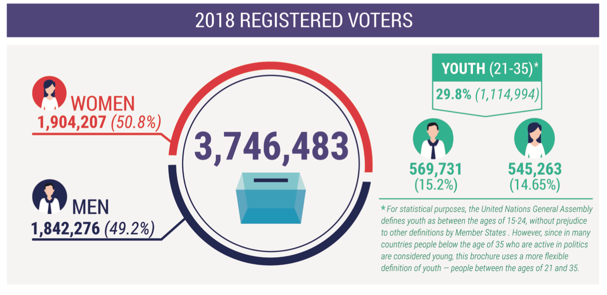
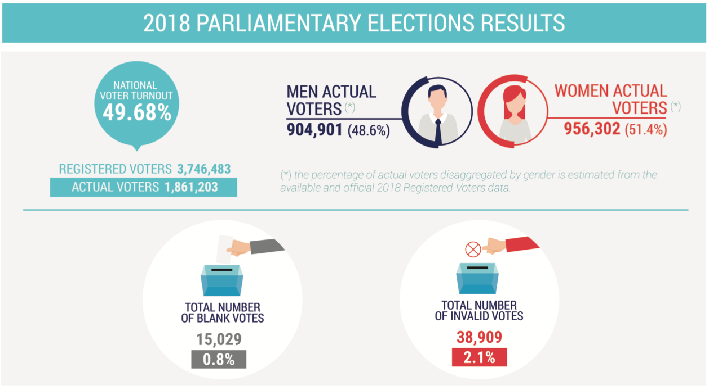
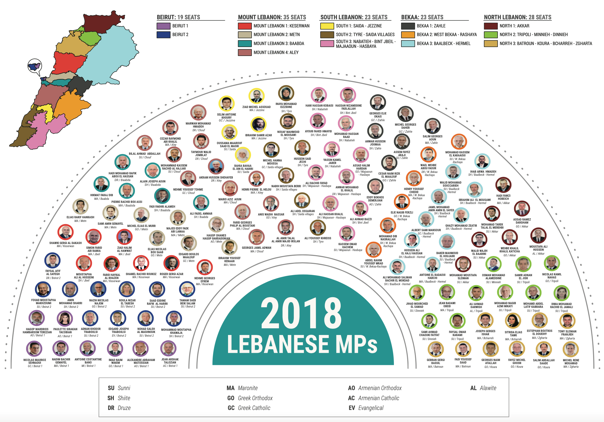
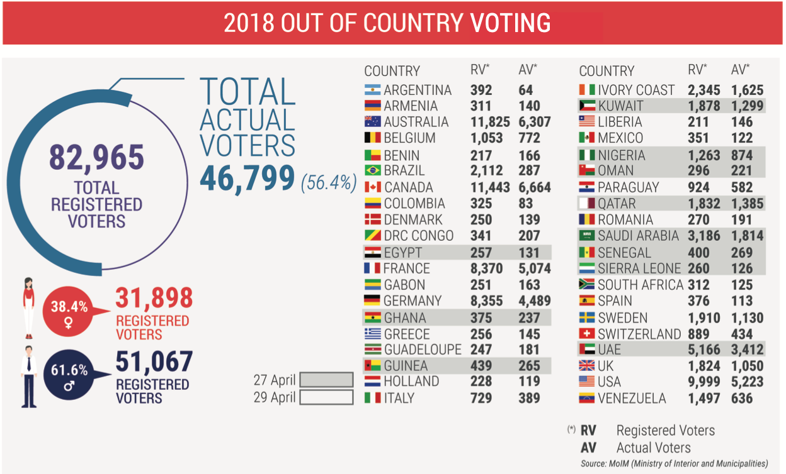

Our aim is to bring change to Lebanon
by educating the Lebanese
Population on the importance of civic engagement and why change is needed now more than ever.
Population on the importance of civic engagement and why change is needed now more than ever.
Now is the best time to engage in civic engagement especially
voting with parliamentary elections coming in less than a year.
Its time to bring an effective and competent leadership in Lebanon
and the only way to do that is by voting in the upcoming elections.
Voting is a very important part of any democracy. By voting,
citizens are participating in the democratic process. Citizens vote for
leaders to represent them and their ideas, and the leaders support the citizens' interests.
It is a way to get their voices heard.
Lebanon is country that has been through
countless wars both internal and external. But the
biggest problem it faces is within specifically its elite
corrupt political class. The people in power have
been in power for decades and some of them have given their sons their reigns of power
. These corrupt sectarian leaders have led the country to the brink of collapse
. On October 17 we saw millions take to the streets demanding the resignation of the President
and the government and calling for early parliamentary elections.
Below are some of the reasons to vote in the upcoming elections.
To start Lebanon is currently facing an economic crisis similar to that of Venezuela with the Lebanese Lira losing more than 90%
of its value
Second, Lebanon is facing the aftermath of an explosion in the Beirut port that is one of the biggest non-nuclear explosions in history
that left 200 dead, thousands injured and at least 150,000 homeless all because of neglect and carelessness of explosions.
Third Lebanon is facing deep sectarian divisions among the population that were created by the Corrupt political elite in order to keep
population under control. This as created hatred among the Lebanese population rather than unity.
Fourth, Lebanon is facing huge levels of corruption using clientelism. This method has helped them get elected and stay in power for so long. It is most common during the election period.
Fifth, Lebanon is facing power cuts that occur at least 8 hours a day sometimes longer.
Along with the lack of water at home. People are obliged to buy water for their homes and obliging people who need electricity
to buy amperes from a local politically affiliated person in their neighborhood in order to have electricity at homes
1. Go to the Electoral Lists page on the DGCS website, here
2.Select the required details using the drop-down lists (governorate, district, village/neighborhood, gender, sect, and civil registry number). These details can be found on your identification documents (national ID or passport).
3.Click “Search” (بحث).
4.Search for your name in the resulting list. If it’s there, you’re eligible to vote. Make sure to check the details for any errors or misspellings.
5.Alternatively, you can enter your national ID number (0000xxxxxxxx) in the dedicated field and click “Search” to view your details individually, instead of searching through your locality’s list. In case you find a mistake, you can report it to the DGCS by downloading and filling a correction-request form, then submitting it to your civil registration office, or to the Lebanese embassy or consulate if you live abroad.
Here are the names of some alternative secular political parties to vote for in the upcoming 2022 parliamentary election Beirut Madinati بيروت مدينتي Citizens in a State مواطنون ومواطنات في دولة LiHaqqi لحقي Minteshreen منتشرين National Bloc الكتلة الوطنية Taqaddomn تقدم
In the 2018 elections less than 50% of the registered voters went to vote. Below is the voting system and some of the 2018 election statistics
    